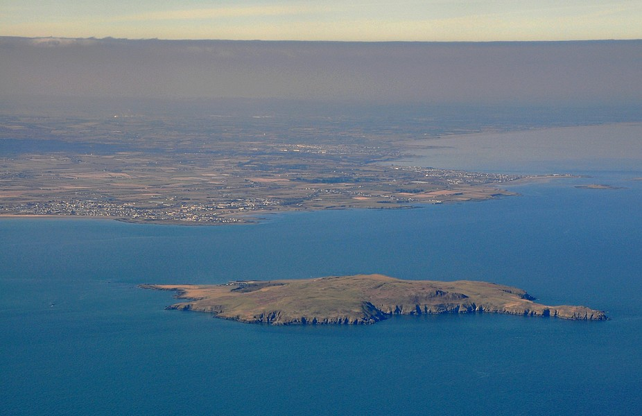

Introduction
Lambay or Lambay Island (from Old Norse Lamb-ey, meaning "lamb island" also called Reachrainn in Irish) lies in the Irish Sea off the coast of north County Dublin in Ireland. It is four kilometres offshore from the headland at Portrane and is the easternmost point of the state.
You can see the island right across from the south beach in a small village called Rush.
Tours
There are private tours going to Lambay Island, if you wish to go there click on the link below to find out more info.
http://www.skerriesseatours.ie/trips.html